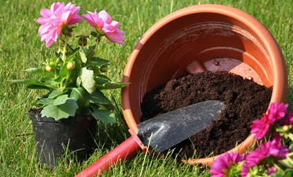

 Somos AgroWidget realizamos ventas de plantas y erramientas de jardineria por todo Chile.
Estamos orgullosos de ser, proveedores de plantas en Chile y desde este 2021 queremos traspasar los atributos de nuestras plantas y productos a todos los hogares de varias comunas de la región metropolitana y la V región a través de la venta online. Desde nuestros inicios hemos perseguido nuestra visión de ser un modelo de excelencia dentro de la industria verde, que defiende el compromiso de agregar valor a nuestros clientes y para el medio ambiente.
“Producir plantas de calidad es nuestra pasión, y ésta crece día a día con la satisfacción de nuestros clientes”.
Introducir al mercado cada año más de 25 nuevas variedades y/o formatos de plantas ya que queremos sorprender y cautivar permanentemente a nuestros clientes.